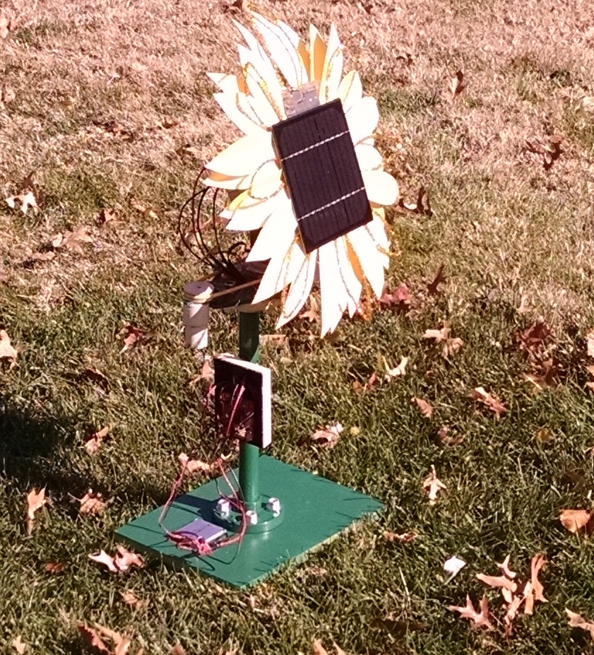

portfolio
resume
contact
internships
Washington University in St. Louis (August 2013 - Present)

Senior design project to build a solar panel that can track the sun. (Fall 2014)
Elon University (August 2010 - May 2013)
Pre-University (Before August 2010)